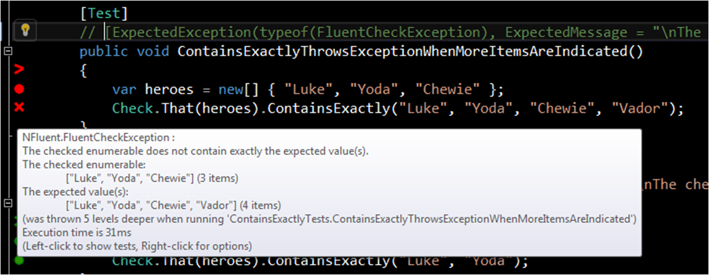
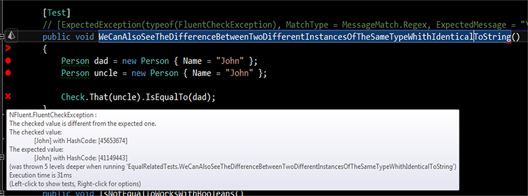

Introducing NFluent.
NFluent speeds up and eases the way you write your assertions
(that we call 'checks' BTW, to avoid conflicts with all your favorite test runners)
Check.That() is all you've got to remember! before you get carried away by the super-duper-happy-dot experience of NFluent
With NFluent, you can write simple checks like this:
var integers = new int[] { 1, 2, 3, 4, 5, 666 }; Check.That(integers).Contains(3, 5, 666); integers = new int[] { 1, 2, 3 }; Check.That(integers).IsOnlyMadeOf(3, 2, 1); var guitarHeroes = new[] { "Hendrix", "Paco de Lucia", "Django Reinhardt", "Baden Powell" }; Check.That(guitarHeroes).ContainsExactly("Hendrix", "Paco de Lucia", "Django Reinhardt", "Baden Powell"); var camus = new Person() { Name = "Camus" }; var sartre = new Person() { Name = "Sartre" }; Check.That(camus).IsNotEqualTo(sartre).And.IsInstanceOf<Person>(); var heroes = "Batman and Robin"; Check.That(heroes).Not.Contains("Joker").And.StartsWith("Bat").And.Contains("Robin"); int? one = 1; Check.That(one).HasAValue().Which.IsPositive().And.IsEqualTo(1); const Nationality FrenchNationality = Nationality.French; Check.ThatEnum(FrenchNationality).IsNotEqualTo(Nationality.Korean); string motivationalSaying = "Failure is mother of success."; Check.That(motivationalSaying).IsNotInstanceOf<int>();With NFluent, you can also write checks like this:
var persons = new List<Person> { new Person { Name = "Thomas", Age = 38 }, new Person { Name = "Achille", Age = 10, Nationality = Nationality.French }, new Person { Name = "Anton", Age = 7, Nationality = Nationality.French }, new Person { Name = "Arjun", Age = 7, Nationality = Nationality.Indian } }; Check.That(persons.Properties("Name")).ContainsExactly("Thomas", "Achille", "Anton", "Arjun"); Check.That(persons.Properties("Age")).ContainsExactly(38, 10, 7, 7); Check.That(persons.Properties("Nationality")).ContainsExactly(Nationality.Unknown, Nationality.French, Nationality.French, Nationality.Indian); // more fluent than the following classical NUnit way, isn't it? // CollectionAssert.AreEquivalent(persons.Properties("Age"), new[] { 38, 10, 7, 7 }); // it's maybe even more fluent than the java versions // FEST fluent assert v 2.x: // assertThat(extractProperty("name" , String.class).from(inn.getItems())).containsExactly("+5 Dexterity Vest", "Aged Brie", "Elixir of the Mongoose", "Sulfuras, Hand of Ragnaros", "Backstage passes to a TAFKAL80ETC concert", "Conjured Mana Cake"); // FEST fluent assert v 1.x: // assertThat(inn.getItems()).onProperty("name").containsExactly("+5 Dexterity Vest", "Aged Brie", "Elixir of the Mongoose", "Sulfuras, Hand of Ragnaros", "Backstage passes to a TAFKAL80ETC concert", "Conjured Mana Cake");Or like this:
// Works also with lambda for exception checking Check.That(() => { throw new InvalidOperationException(); }).Throws<InvalidOperationException>(); // or execution duration checking Check.That(() => Thread.Sleep(30)).LastsLessThan(60, TimeUnit.Milliseconds);
NFluent is also extensible to your specific needs
You want to create your DSL for testing your own business objects? Can't be easier. Follow the white rabbit here, or read the nice article published by Rui on CodeDistillers' blog.
NFluent accelerates your test troubleshooting sessions
With truly-helpful error messages provided, NFluent spares you a few sessions with the debugger in your day to day work
Another booster for your productivity, and to reduce your TDD feedback loop ;-)
Samples of crystal-clear error messages



NFluent error messages are not only useful, but reliable by nature
Indeed, NFluent is less error-prone for your day to day work.
It ends the issue related to wrongly ordered "expected" and "actual" values
That you can find within the classical .NET unit tests frameworks assertions.Here, the distinction between the expected value and the one to be checked is natively enforced by the NFluent syntax. Thus, no question to ask ourselves when we write our assertions. And no question to ask ourselves when consulting the error messages on our Software Factory dashboard.
NFluent transforms your tests into readable documentation for your peers
Very close to plain English, the NFluent syntax makes your tests easier to read even for non-developers people (QA, BA)
We aim to release the most fluent .NET assertion lib ever ;-)
There were attempts made previously by other open source projects, but even the most serious alternative did not suit our needs.
Indeed:
- we think that writing a lambda expression within an check statement is not really a fluent experience (neither on a reading perspective).
- we think that those other check libraries have not chosen the proper vocabulary (
.Should().... why don't they choose Must instead?!?). And thus, you'd rather rely on a stronger semantic for your checks (i.e. NFluent'sCheck.That).
Is the next statement fluent to write for you?!?
var myArray = new[] { 1, 2, 3 }; myArray.Should().Contain(item => item > 3, "at least {0} item should be larger than 3", 1);
We don't think so, and we prefer the NFluent version:
Check.That(myArray).IsGreaterThan(3);
Other example: are you happy to type
new[] {...} as a method argument like does another famous "fluent" library?
myArray.Should().Have.SameSequenceAs(new[] { 1, 2, 3 });
or like us, you prefer to type:
Check.That(myArray).ContainsExactly(1,2,3);
NFluent is different
- NFluent is completely driven by the super-duper-happy-path principle (coming from Nancy) to fluent your TDD experience: We really consider the 'dot' auto completion experience as crucial. It means that you should not be polluted by things not related to the current unit testing context (as it is the case with the other 'fluent' libraries and their extension methods applied on classical .NET types, and their intellisense flooding).
- NFluent provides some extra candies, such as the awesome Properties() extension method for IEnumerable for instance (as showed within the code samples).
Because fluentness is our grail
It's an obsession for us, and everything we do (API, error messages, ...) is completely driven by this research.NFluent is really awesome pal. Try it, you will see!
And of course, you can keep working with your favorite test runner!


 . . .
. . .
Indeed, NFluent is simply an awesome assertion library, and ... she's not exclusive ;-)
Wall of fame
Many thanks:- To the contributors dream team: Cyrille DUPUYDAUBY, Rui CARVALHO & Marc-Antoine LATOUR (Marco which helped me a lot at the very beginning)
- To Rui CARVALHO, for the nice NFluent logo he has designed.
- To the mates that gave me ideas and feedbacks to make this lib as fluent as possible: Joel COSTIGLIOLA (former active contributor of Java FEST Assert, which now works on his AssertJ fork), Benoit LABAERE ...
- To Omer RAVIV, which supports the NFluent project by offering us some free licenses for the nice OzCode debugging extension for Visual Studio.
- To the awesome and truly addictive NCrunch, that really helps me in my day-to-day TDD.
- To Jetbrains, which still creates some of the coolest tools for developers (whatever the language), and which supports our NFluent project by providing us some space within their teamcity code better instance (note: you can enter as guest).
- And to David GAGEOT, the famous french java craftsman which first showed me the powa of fluentness in unit testing during an awesome Brown Bag Lunch session.
Thomas PIERRAIN, creator of NFluent